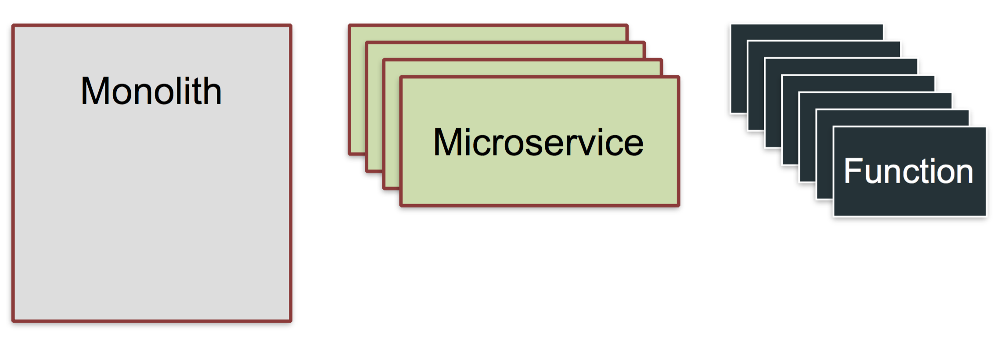
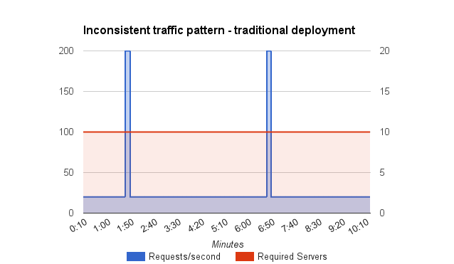
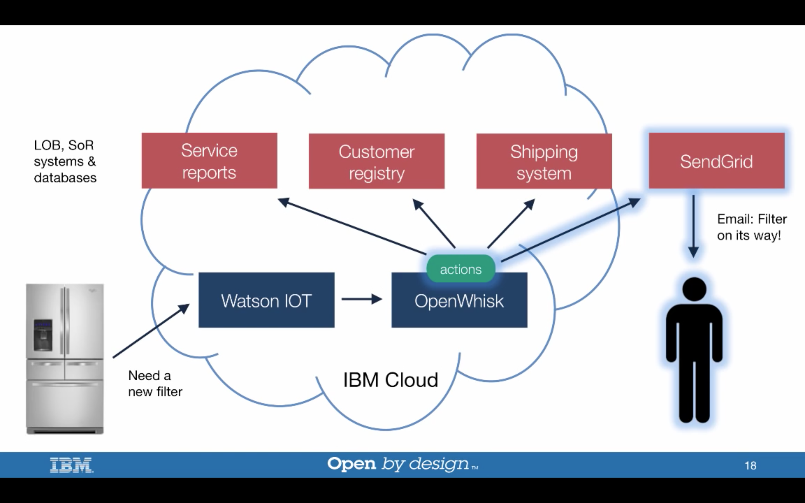

<!DOCTYPE HTML>
<html>
<head><meta name="generator" content="Hexo 3.9.0">
  <meta charset="utf-8">
  <meta http-equiv="X-UA-Compatible" content="IE=edge">
  <meta name="apple-mobile-web-app-capable" content="yes">
  <meta name="apple-mobile-web-app-status-bar-style" content="black">
  <meta name="google-site-verification" content>
  
  <title>所谓Serverless，你理解对了吗？</title>
  <meta name="author" content="Emac">
   <meta name="description" content="随着DevOps和微服务的理念日渐被IT业界所接受，另一个新名词Serverless也开始进入人们的视野。尤其在今年4月份国内两大云服务厂商阿里云、腾讯云先后推出各自的Serverless产品之后，Serverless一时洛阳纸贵。那到底什么是Serverless，它跟DevOps和微服务又有什么样">
  

  <meta property="og:title" content="所谓Serverless，你理解对了吗？">
  <meta name="viewport" content="width=device-width, initial-scale=1, maximum-scale=1">
  <meta property="og:site_name" content="Emac">
 <meta property="og:image" content="undefined">
  
  <link href="/apple-touch-icon-precomposed.png" sizes="180x180" rel="apple-touch-icon-precomposed">
  <link rel="alternate" href="/atom.xml" title="Emac" type="application/atom+xml">
  <link rel="stylesheet" href="//cdn.bootcss.com/bootstrap/3.3.6/css/bootstrap.min.css">
  <link rel="stylesheet" href="//cdn.bootcss.com/font-awesome/4.5.0/css/font-awesome.min.css">
  <link rel="stylesheet" href="/css/m.min.css">
  <link rel="icon" type="image/x-icon" href="/favicon.ico">
</head>
</html>
<body>
  <div id='wx_pic' style='display:none;'></div>
  <div id="main">
    <div class="behind">
      <div class="back">
        <a href="/" class="black-color"><i class="fa fa-times" aria-hidden="true"></i></a>
      </div>
      <div class="description">
        &nbsp;拾贝
      </div>
    </div>
    <div class="container">
      

  <article class="standard post">
    <div class="title">
      
  
    <h1 class="page-title center">
        所谓Serverless，你理解对了吗？
    </h1>
  


    </div>
    <div class="meta center">
      
<time datetime="2017-12-31T16:00:00.000Z">
  <i class="fa fa-calendar"></i>&nbsp;
  2018-01-01
</time>


    
    &nbsp;
    <i class="fa fa-tag"></i>&nbsp;
    <a href="/categories/arch/">arch</a>


    
    &nbsp;
    <i class="fa fa-tag"></i>&nbsp;
    <a href="/tags/原创/">原创</a>·<a href="/tags/Serverless/">Serverless</a>


    </div>
    <hr>
    <div class="picture-container">
      
    </div>
    <blockquote>
<p>随着DevOps和微服务的理念日渐被IT业界所接受，另一个新名词Serverless也<a href="https://trends.google.com/trends/explore?date=today%205-y&amp;q=serverless" target="_blank" rel="noopener">开始</a>进入人们的视野。尤其在今年4月份国内两大云服务厂商阿里云、腾讯云先后推出各自的Serverless产品之后，Serverless一时洛阳纸贵。那到底什么是Serverless，它跟DevOps和微服务又有什么样的联系呢？本文将尝试揭开Serverless的神秘面纱，让你一睹为快。</p>
</blockquote>
<h2 id="1-Serverless-No-Server"><a href="#1-Serverless-No-Server" class="headerlink" title="1 Serverless != No Server"></a>1 Serverless != No Server</h2><p>首先，必须澄清的是Serverless并不能按字面上理解为无服务器，而是说对应用开发者而言，不再需要<strong>操心</strong>大部分跟服务器相关的事务，比如服务器选购、应用运行环境配置、负载均衡、日志搜集、系统监控等，这些事情统统交给Serverless平台即可，应用开发者唯一需要做的就是编写应用代码，实现业务逻辑。为了避免歧义，本文将保留使用Serverless，而不是其通常的中文翻译无服务器。</p>
<p>Serverless最早由Amazon提出，第一个Serverless平台是2014年年底推出的<a href="https://aws.amazon.com/cn/lambda/" target="_blank" rel="noopener">AWS Lambda</a>，应用开发者只需要上传代码或者应用包，即可发布一个应用。之后全球各大云服务厂商都纷纷推出各自的Serverless平台，比如<a href="https://cloud.google.com/functions/" target="_blank" rel="noopener">Google Cloud Functions</a>，<a href="https://azure.microsoft.com/en-us/services/functions/" target="_blank" rel="noopener">Azure Functions</a>，<a href="https://www.ibm.com/cloud/functions" target="_blank" rel="noopener">IBM Cloud Functions</a>，以及前面提到的<a href="https://www.aliyun.com/product/fc" target="_blank" rel="noopener">阿里云函数计算</a>和<a href="https://www.aliyun.com/product/fc" target="_blank" rel="noopener">腾讯云无服务器云函数</a>等。在云服务厂商之外，开源社区也涌现出很多优秀的Serverless框架，比如<a href="https://openwhisk.apache.org/" target="_blank" rel="noopener">Apache OpenWhisk</a>，<a href="http://cloud.spring.io/spring-cloud-function/" target="_blank" rel="noopener">Spring Cloud Function</a>，<a href="https://github.com/lambadaframework/lambadaframework" target="_blank" rel="noopener">Lambada Framework</a>，<a href="https://webtask.io/" target="_blank" rel="noopener">webtask</a>等。</p>
<p>根据<a href="https://martinfowler.com/articles/serverless.html" target="_blank" rel="noopener">Serverless Architectures</a>一文，Serverless应用可以细分为BaaS和FaaS两类，</p>
<ul>
<li>BaaS: Backend as a Service，这里的Backend可以指代任何第三方提供的应用和服务，比如提供云数据库服务的<a href="https://firebase.google.com/" target="_blank" rel="noopener">Firebase</a>和<a href="http://parseplatform.org/" target="_blank" rel="noopener">Parse</a>，提供统一用户身份验证服务的<a href="https://auth0.com/" target="_blank" rel="noopener">Auth0</a>和<a href="https://aws.amazon.com/cn/cognito/" target="_blank" rel="noopener">Amazon Cognito</a>等。</li>
<li>FaaS: Functions as a Service，应用以函数的形式存在，并由第三方云平台托管运行，比如之前提到的AWS Lambda，Google Cloud Functions等。</li>
</ul>
<p>本文主要讨论的是FaaS，这也是目前各类Serverless平台和框架主要支持的类型。</p>
<h2 id="2-函数即应用"><a href="#2-函数即应用" class="headerlink" title="2 函数即应用"></a>2 函数即应用</h2><blockquote>
<p>当我们讨论函数时，我们到底在讨论什么？</p>
</blockquote>
<p>函数，往大了说可以是一个应用的main函数，往小了说也可以是一个简单的加法函数，那到底该如何理解FaaS中的函数呢？先来看张图。</p>
<p></p>
<p>左侧的Monolith即我们常说的单体应用，中间是微服务，右侧就是FaaS中的函数（为了避免歧义，如不特殊指明，下文提到的函数都是指代FaaS中的函数）。如同一个单体应用可以按业务模块拆分成多个微服务，一个微服务也可以按使用场景拆分成多个函数。比如一个广告微服务，至少可以拆分出实时竞价、展示计数、报表查询等多个函数。也就是说，FaaS中的函数和微服务中的API是同一粒度的。但不同于API，在Serverless架构下，每个函数都是独立部署，按需执行。那这样的拆分有意义吗？接着往下看。</p>
<h2 id="3-搞懂Serverless的4把钥匙"><a href="#3-搞懂Serverless的4把钥匙" class="headerlink" title="3 搞懂Serverless的4把钥匙"></a>3 搞懂Serverless的4把钥匙</h2><p>和其他架构相比，Serverless有以下4个特点。</p>
<h3 id="3-1-运行成本更低"><a href="#3-1-运行成本更低" class="headerlink" title="3.1 运行成本更低"></a>3.1 运行成本更低</h3><p>无论是过去的IDC，还是如今的云主机，本质上都是一种包月计费模式，也就是说，不管有没有用户访问你的应用，也不管你有没有部署应用，你都要付相同的钱。但对于Serverless应用，你只需要根据实际使用的资源量（比如AWS Lambda是按<code>内存大小*计算时间</code>计算资源量）进行付费，也即用多少，付多少，相当于移动网络的按流量计费模式。那为什么说使用这种模式就能降低运行成本呢？</p>
<p></p>
<p>红线以下的长方形面积代表了传统包月计费模式下你所需要支付的成本，而蓝色区域的面积则代表了按流量计费模式下的成本，显然后者要远低于前者。根据福布斯2015年发布的一份<a href="https://www.forbes.com/forbes/welcome/?toURL=https://www.forbes.com/sites/benkepes/2015/06/03/30-of-servers-are-sitting-comatose-according-to-research/&amp;refURL=&amp;referrer=#2f4944612c2" target="_blank" rel="noopener">研究报告</a>，从全年来看，一个典型的数据中心里的服务器平均资源使用率只有可怜的5%到15%，也就是说如果全部使用Serverless，理论上至少可以节省80%的运行成本。</p>
<p>按流量计费的另一个隐藏的好处是任何的性能提升都可以直接的反应到运行成本上，这让技术人员的价值也有了更充分的体现。</p>
<h3 id="3-2-自动扩缩容"><a href="#3-2-自动扩缩容" class="headerlink" title="3.2 自动扩缩容"></a>3.2 自动扩缩容</h3><p>Serverless第二个常被提及的特点是自动扩缩容。前面说了函数即应用，一个函数只做一件事，可以独立的进行扩缩容，而不用担心影响其他函数，并且由于粒度更小，扩缩容速度也更快。而对于单体应用和微服务，借助于各种容器编排技术，虽然也能实现自动扩缩容，但由于粒度关系，相比函数，始终会存在一定的资源浪费。比如一个微服务提供两个API，其中一个API需要进行扩容，而另一个并不需要，那么这时候扩容，对于不需要的API就是一种浪费。</p>
<h3 id="3-3-事件驱动"><a href="#3-3-事件驱动" class="headerlink" title="3.3 事件驱动"></a>3.3 事件驱动</h3><p>函数本质上实现的是一种<a href="https://en.wikipedia.org/wiki/IPO_model" target="_blank" rel="noopener">IPO</a>（Input-Process-Output）模型，它是短暂的，是即用即走的。这点是函数区别于单体应用和微服务的另一个特征。不管是单体应用，还是微服务，都是系统中的常驻进程，套用一句流行语，就是你来或不来，我都在这里，不舍不弃。而函数不一样，既不发布任何服务，没有请求时也不消耗任何资源，只有当请求来了，才会消耗资源进行响应，服务完立刻释放资源。正是由于这一点，函数天然的适用于任何事件驱动的业务场景，比如广告竞价，身份验证，定时任务，以及一些新兴的IoT应用。</p>
<p></p>
<p><em>OpenWhisk给出的一个IoT电冰箱的<a href="https://www.slideshare.net/DanielKrook/openwhisk-a-platform-for-cloud-native-serverless-event-driven-apps?ref=https://developer.ibm.com/opentech/2016/09/06/what-makes-serverless-attractive/" target="_blank" rel="noopener">案例</a></em></p>
<h3 id="3-4-无状态性"><a href="#3-4-无状态性" class="headerlink" title="3.4 无状态性"></a>3.4 无状态性</h3><p>函数的IPO本质决定了函数的另一个特征，无状态性。无状态一方面有助于提高函数的可重用性和可迁移性，但另一方面也带来了一些性能上的损失。第一，函数不是常驻进程，这就意味着每来一个请求，函数都要经历一次冷启动，这对编译型语言编写的应用不啻为一场噩梦（以Spring Boot为例，即便是一个最简单的Hello World应用，至少也需要5秒钟才能启动完毕）。第二，每服务完一个请求，函数所在的进程就会被杀掉，也就是说使用内存进行缓存对函数而言不再有意义。第三，由于每次启动都可能被调度到新的服务器上，任何基于本地磁盘的缓存技术也就不再适用。从第二点和第三点可知，函数只能使用外存（比如Redis，数据库）进行缓存，而操作外存都需要通过网络，性能跟内存、本地硬盘相比差了一到两个数量级。</p>
<h2 id="4-DevOps-gt-NoOps"><a href="#4-DevOps-gt-NoOps" class="headerlink" title="4 DevOps =&gt; NoOps"></a>4 DevOps =&gt; NoOps</h2><blockquote>
<p>如果说Agile+IaaS促成了DevOps，那么Agile+PaaS就孕育了Serverless。</p>
</blockquote>
<p>理解了什么是Serverless，再来看看它和DevOps的关系。DevOps虽然做了很多Dev的事，但底牌还是Ops（好比猫熊虽然长得像猫，但实际上还是熊）。但Serverless不同，从本质上说，它是把Ops外包给第三方平台，让Dev专注于业务逻辑的实现而不用操心Ops相关的工作，最终的结果就是绝大多数企业不再需要Ops这个岗位。它和DevOps最大的共同点就是帮助企业缩短产品上市的时间。</p>
<h2 id="5-小结"><a href="#5-小结" class="headerlink" title="5 小结"></a>5 小结</h2><p>以上就是我对Serverless的一些简单介绍，欢迎你到我的<a href="https://github.com/emac/emac.github.io/issues/2" target="_blank" rel="noopener">留言板</a>留言交流，和大家一起过过招。下一篇我会手把手教大家如何在AWS Lambda部署一个基于Spring Cloud Function的Serverless应用，敬请期待。</p>
<h2 id="6-参考"><a href="#6-参考" class="headerlink" title="6 参考"></a>6 参考</h2><ul>
<li><a href="https://martinfowler.com/articles/serverless.html" target="_blank" rel="noopener">Serverless Architectures</a></li>
<li><a href="https://developer.ibm.com/opentech/2016/09/06/what-makes-serverless-attractive/" target="_blank" rel="noopener">What makes serverless architectures so attractive?</a></li>
<li><a href="http://www.infoq.com/cn/articles/practical-serverless-computing?utm_campaign=infoq_content&amp;utm_source=infoq&amp;utm_medium=feed&amp;utm_term=%E6%9E%B6%E6%9E%84%20&amp;%20%E8%AE%BE%E8%AE%A1-articles" target="_blank" rel="noopener">InfoQ虚拟研讨会：无服务器计算的实践方法</a></li>
<li><a href="https://mp.weixin.qq.com/s?__biz=MzA5OTAyNzQ2OA%3D%3D&amp;chksm=88931c6cbfe4957a702e66221e1bf997c4ba5a66de279294b08cccadd3ff5d6cabf103657484&amp;idx=1&amp;mid=2649694991&amp;mpshare=1&amp;scene=23&amp;sn=818dea0cb058a08ac6b66ee865204630&amp;srcid=0907dIsFi2ho3ez9orBMGatf" target="_blank" rel="noopener">Serverless云函数架构精解</a></li>
<li><a href="http://www.infoq.com/cn/news/2017/06/tengxun-cloud-serverless?utm_campaign=infoq_content&amp;utm_source=infoq&amp;utm_medium=feed&amp;utm_term=DevOps" target="_blank" rel="noopener">姗姗来迟的Serverless如何助力微服务和DevOps</a></li>
</ul>


  </article>
  </script>
    <script async src="https://dn-lbstatics.qbox.me/busuanzi/2.3/busuanzi.pure.mini.js">
  </script>
  <div class="busuanzi center">
    页阅读量:&nbsp;<span id="busuanzi_value_page_pv"></span>&nbsp;・&nbsp;
    站访问量:&nbsp;<span id="busuanzi_value_site_pv"></span>&nbsp;・&nbsp;
    站访客数:&nbsp;<span id="busuanzi_value_site_uv"></span>
  </div>


    </div>
  </div>
  <footer class="page-footer"><div class="clearfix">
</div>
<div class="right-foot container">
    <div class="firstrow">
        <a href="#top" >
        <i class="fa fa-arrow-right"></i>
        </a>
        © emacoo.cn 2015-2020
    </div>
    <div class="secondrow">
        <a href="https://github.com/gaoryrt/hexo-theme-pln">
        
        </a>
    </div>
</div>
<div class="clearfix">
</div>
</footer>
  <script src="//cdn.bootcss.com/jquery/2.2.1/jquery.min.js"></script>
<script src="/js/search.js"></script>
<script type="text/javascript">

// comments below to disable loading animation
function revealOnScroll() {
  var scrolled = $(window).scrollTop();
  $(".excerpt, .index-title, .index-meta, p").each(function() {
    var current = $(this),
      height = $(window).outerHeight(),
      offsetTop = current.offset().top;
    (scrolled + height + 50 > offsetTop) ? current.addClass("animation"):'';
  });
}
$(window).on("scroll", revealOnScroll);
$(document).ready(revealOnScroll)

// disqus scripts


// dropdown scripts
$(".dropdown").click(function(event) {
  var current = $(this);
  event.stopPropagation();
  $(current).children(".dropdown-content")[($(current).children(".dropdown-content").hasClass("open"))?'removeClass':'addClass']("open")
});
$(document).click(function(){
    $(".dropdown-content").removeClass("open");
})

// back to top scripts
$("a[href='#top']").click(function() {
  $("html, body").animate({ scrollTop: 0 }, 500);
  return false;
});


var path = "/search.xml";
searchFunc(path, 'local-search-input', 'local-search-result');

</script>

</body>
</html>
